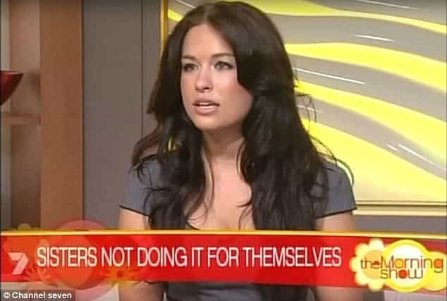

< < < Back
Failed Political Candidate Slaps Politician With Violence Order For Alleged Kiss – Return Of Kings
The General-Secretary of the New South Wales state branch of the center-left Australian Labor Party, Jamie Clements, was slapped with an apprehended violence order (AVO) in August. Six weeks earlier in June, he allegedly kissed Stefanie Jones, a failed state political candidate in Cronulla, along Sydney’s southern extremities, in a room in New South Wales’ Parliament House and pushed her against a wall.
Armed with the kind of political experience you’d expect from George H. W. Bush, who was a millionaire businessman, Congressman, Ambassador to the UN, Chairman of the RNC, America’s envoy to China, CIA Director, and Vice-President before being elected to the White House himself, Jones ran for public office whilst a 23-year-old student and was called Labor’s “secret weapon” (I wonder why?).
In late August, police decided, due to the absolute paucity of evidence, not to lay assault charges against Clements. Despite my professed and considerable knowledge of Australian state and federal politics, I must admit that I would not have been able to quickly pick Clements’ face and name his position before this media storm. Now Google is replete with search returns dominated by thoroughly unsubstantiated sexual misconduct allegations (read: spectacularly delayed revenge tactics).
The kiss attempt may or may not have happened, either in the way Stefanie Jones described it or with a different explanation. Perhaps they even fully kissed, consensually or otherwise. I will not prejudge what happened. Yet what I do believe is that the granting of the apprehended violence order makes a travesty of the policing and all-round legal systems.
Based on the reports circulating freely in the press, the severe delay in making a complaint to the police and the nature of the accusation itself point to a waste of time and other resources, not to mention an irrevocable besmirching of Clements’ reputation.
Blaming the police is not the answer
There’s no evidence to charge Jamie Clements but equally no indication he will be treated fairly in the court of public opinion.
Although people may be ready to criticize the police involved for granting the apprehended violence order in the first place, which may be more than warranted, there are some key distinctions between these orders and criminal convictions. There is no finding of “guilt” and no penalties, aside from stipulated constraints like staying away from the person or particular places.
The sad thing is that the amorphous nature of AVOs make them very potent weapons for getting revenge on people, especially male current and ex-lovers. If you think domestic violence can be a perfect vehicle for “he said, she said” convictions, restraining orders require a lower threshold still, without the need for a woman to testify for days in a courtroom or conduct more in-depth interviews with police (which should be required every time in the interests of due process).
As I have asserted previously, police exist in systems where political and other pressures impact upon their resources, directives from the executive arm of government and in other profound ways. The root cause of Clements’ ridiculous receipt of an apprehended violence order is the “rape culture” and “sexual harassment” hysteria gripping the Western world. If catcalling and wolf-whistling, things that I myself don’t have time for but certainly wouldn’t want criminalized, are considered “assault”, alleged kissing as pseudo-sexual battery is par for the course in these retrograde times.
Clements and Jones were previously lovers

Stefanie Jones reported alleged kissing six weeks later and then sought an apprehended violence order. Yet what violence could have been reasonably foreseen at the time the order was granted?
It never amazes me, nor should it amaze you, when younger women in the same industry or even workplace end up in relationships with older, contextually influential and just plain more powerful males. The now split Clements and Jones may be at loggerheads in the much broader media spotlight, but many a work-related romance has fallen apart to the knowledge of dozens of others working in an entire business or office. Relationship breakdowns can turn ugly at the best of times, usually in circumstances where the former parties to a relationship are not colleagues and thus can have some immediate distance afterwards.
For older, more powerful males, however, the outcome of these breakup times can fluctuate dramatically. The split can have no effects at all or career-damaging ones. In Clements’ case, regardless of whether he overcomes some of the stain on his reputation, he is dealing with the latter scenario. If he planned to make the transition from behind-the-scenes political apparatchik to elected legislator in the future, that opportunity has almost certainly evaporated.
Again, we have at our fingertips a powerful lesson in why office romances are (for men) usually amongst the worst decisions you can ever make, especially within cutthroat political parties. In many ways, the situation is actually a love triangle, with Jones’ new boyfriend David Latham (in a massive twist, he’s reasonably close to her in age!) serving as a very senior figure in the NSW ALP as well.
This is just one of the more extraordinary cases

The people of Cronulla would have been ably served by a woman whose chief talent is posing for photos as Labor’s “secret weapon.”
We must uphold a consistent reverence for beyond reasonable doubt, innocence before guilt and meticulous police investigations irrespective of the circumstances. Similar conscientiousness must be applied to regulating the use (or misuse) of AVOs when there is no evidence that any reasonably conceivable threat, even a subjectively determined one, exists.
My criticism of Jones’ inexplicable, shambolic delay in reporting alleged kissing that was the basis of an AVO does not mean that there aren’t extreme problems with the investigation and prosecution of purported “assaults” which are reported within hours. Jones’ accusations simply take the normal legal standard of bizarreness and unfairness to truly surreal heights.
I applaud the decision by police not to use Harry Potter-style divination as evidence to charge Jamie Clements. Clements’ plight is nevertheless shocking, as it demonstrates the fate awaiting many men who either try to kiss or are falsely accused of trying to kiss women on a nightclub dance floor, at the end of a date or indeed anywhere else.
Let’s hope the nominally leftwing Clements starts to see what his political party’s broad ideology really might mean for men both now and going forward.
Read More: Why Is Outspoken Feminist Charlize Theron Dating Alleged Woman-Abuser Sean Penn?